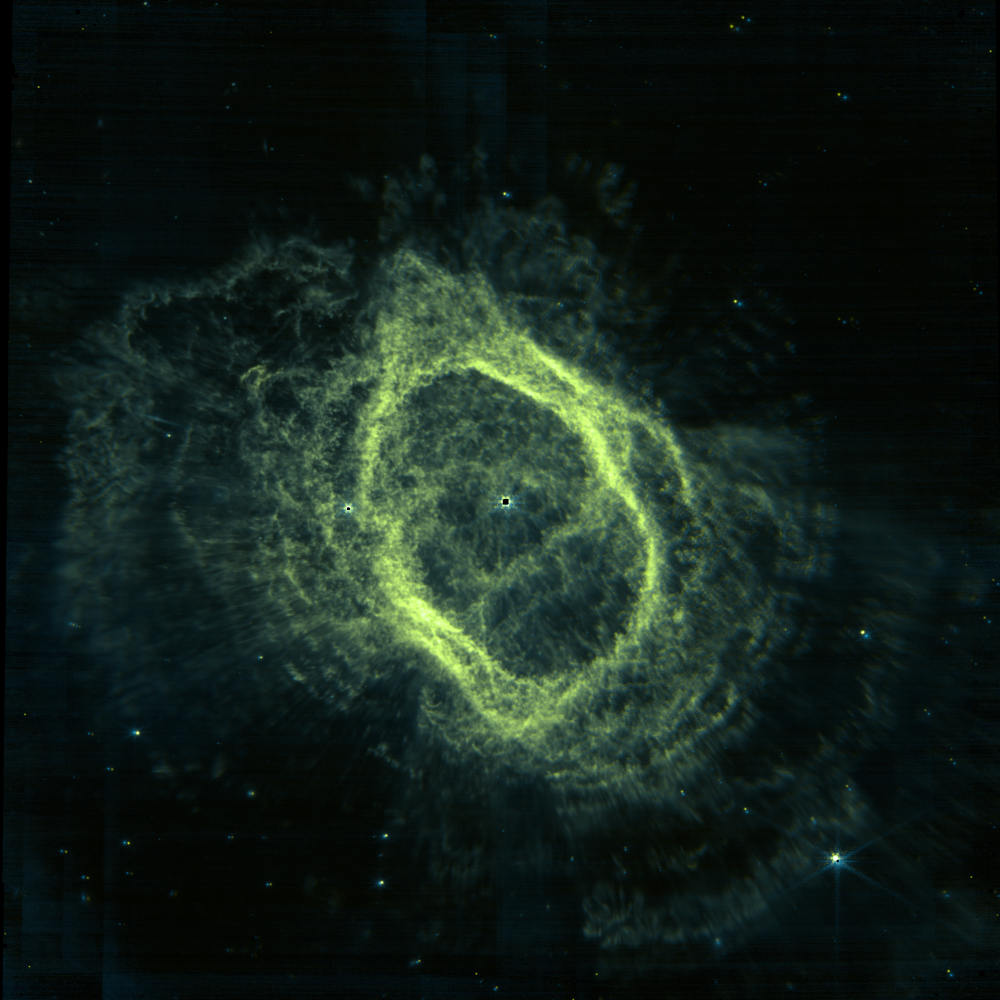

Giovanni's Diary > Chronological > Ephemeris > Entries >
2025-04-03
I did so many things this week, I don't know where to start.
I switched my window manager from i3 to dwm. The cool thing about dwm is that there is no configuration file, instead you have to change the C cource code and recompile it. Moreover, dwm is very very minimal and for most of the things you would need to write custom code, such as full screen, startup programs and different tiling arrangements. It is possible to customize it because it is very minimali, abour 2000 lines of code, which is amazing. I didn't read the entire source yet but I will soon because It is very educational.
Another thing, I downloaded Wikipedia, at least some sections of it. You can download wikipedia to read It offline, and I REALLY like this. I am becoming more and more independent from the internet every day and I am enjoying my offline sessions. I have written offline programming where I talk about this, I used kiwis to download and view the compressed wikipedia data.
I tried to get into space photography by downloading some images from JWST and edited them. You can download the .fits file from the mast portal, then you need to fix the colors with some stretch filters. I used siril for this, which is very powerful but I would prefer something simpler. I then exported the modified .fits into .tif and added colors with gimp. The result is not that great but It's a start.

Figure 1: NGC 3132 Nebula
Yesterday there was the nintendo direct where they announced the switch 2. I am not a really big fan of Nintendo, being a PC gamer for my whole life, but the interesting news is that Silk Song exists and FromSoftware will release a new game similar to bloodborne in style… exclusive for the nintendo switch… (sight). Also two new chapters of deltarune (which I never player but I want to since It is very short).
I have been writing machine learning algorithms, such as KNN and the perceptron. I am particularly enjoying the math behind everything.